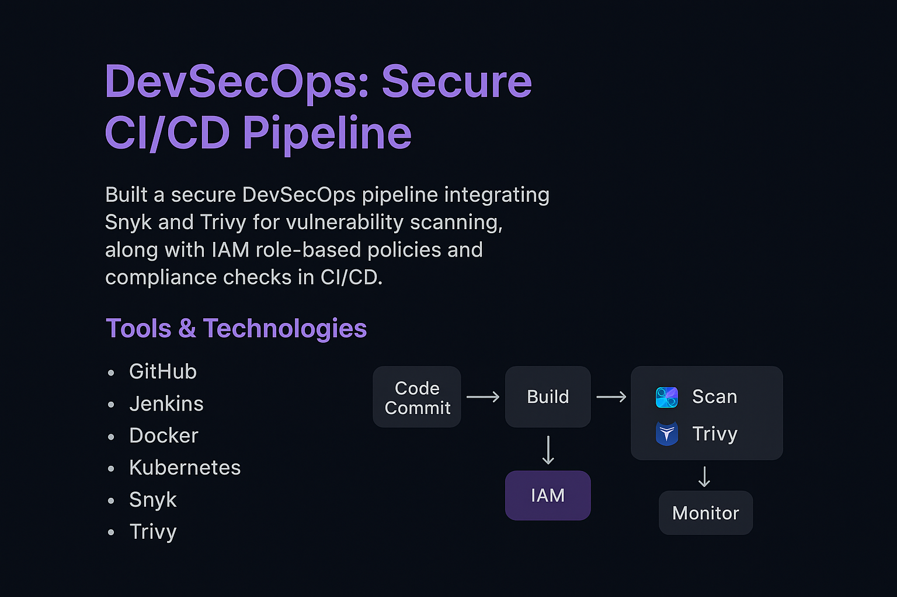

DevSecOps: Secure CI/CD Pipeline

Project Description
Built a secure DevSecOps pipeline integrating Snyk and Trivy for vulnerability scanning, along with IAM role-based policies and compliance checks. This ensured that every application deployment was both automated and security-compliant.
Tools & Technologies
- Version Control: GitHub
- CI/CD: Jenkins
- Containers: Docker
- Orchestration: Kubernetes
- Security: Snyk (dependency scans), Trivy (image scans)
- Access Control: IAM Role-based policies
- Compliance: Automated policy checks in pipeline
Workflow
- Code Commit → Developer pushes code to GitHub.
- Build Stage → Jenkins builds Docker image.
- Security Stage:
- Snyk scans dependencies.
- Trivy scans Docker image for CVEs.
- IAM & Compliance:
- IAM policies enforce least privilege.
- Pipeline blocks deployments failing compliance rules.
- Testing → Unit and integration tests.
- Deploy → Secure image deployed on Kubernetes.
- Monitor → Logs, metrics, and compliance alerts.
Key Achievements
- Automated build, security, and compliance in a single pipeline.
- Enforced least-privilege IAM policies across DevOps tools.
- Prevented insecure builds by auto-blocking failed compliance checks.
- Reduced deployment risks and improved overall security posture.